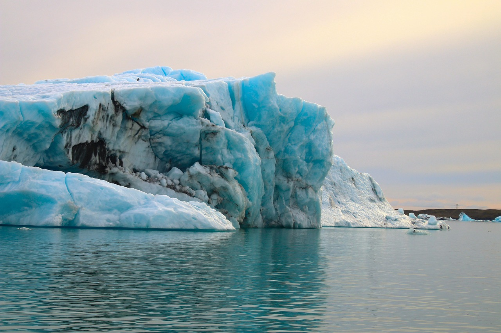

2025 Yılında Karşı Karşıya Olduğumuz Başlıca Sorunlar

Buzullar eriyor!
1. Hızlanan Buzul Erimesi
2025 verileri, Arktik buzullarının son 40 yılın en düşük seviyesinde olduğunu doğruluyor. Bu durum deniz seviyelerini hızla yükseltiyor.
2. Su Stresi ve Kuraklık
Yağış düzenlerinin bozulmasıyla dünya genelinde tarımsal verim %12 düştü. Su kaynaklarına erişim en büyük küresel sorun haline geldi.
3. Okyanus Asitlenmesi
Artan CO2 emilimi okyanus pH seviyelerini düşürerek mercan resiflerini ve deniz yaşamını 2025 itibarıyla çökme noktasına getirdi.
4. Sağlık ve Göç Dalgaları
Yükselen sıcaklıklar hastalıkların yayılmasına ve milyonlarca insanın yaşam alanlarını terk etmesine neden oluyor.
"Geleceği Isıtma, Eyleme Geç!"
#KampüsİklimEylemi 2025